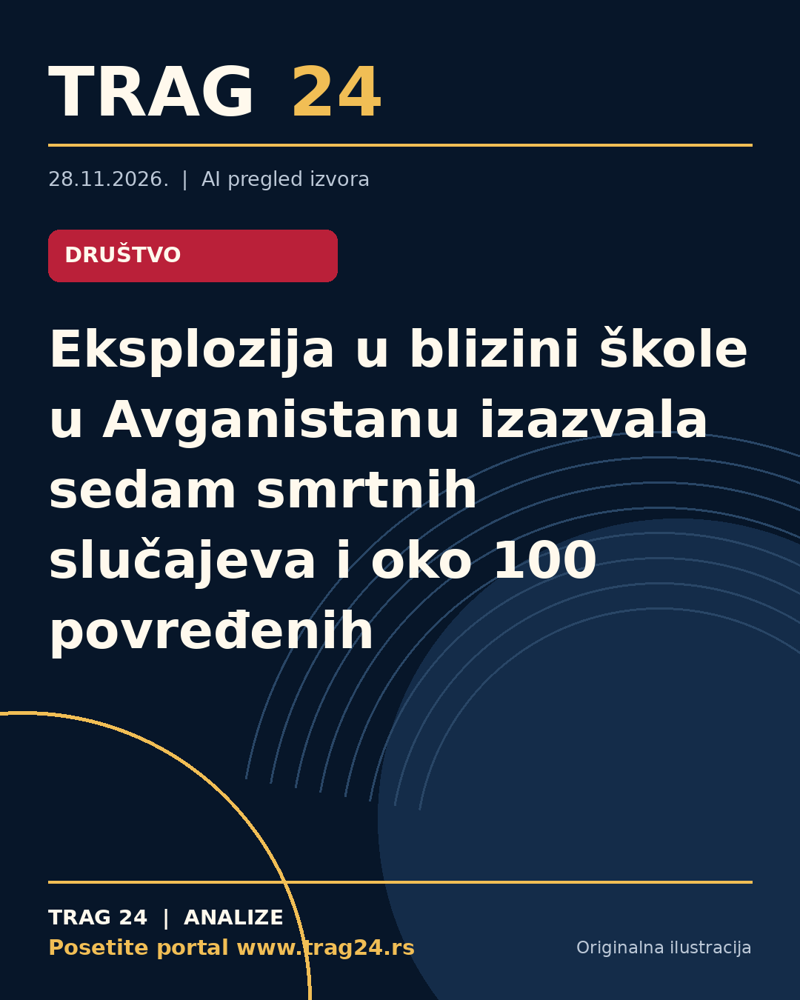

Eksplozija u blizini škole u Avganistanu izazvala sedam smrtnih slučajeva i oko 100 povređenih

ŠTA SE DOGODILO
Ujutro je u provinciji Kunar na severoistoku Avganistana došlo do eksplozije u blizini škole, usled koje je sedam učenika izgubilo život, a oko 100 osoba je povređeno.
HRONOLOGIJA
Eksplozija se dogodila u skladištu eksploziva koje se nalazilo u neposrednoj blizini škole. Radi se o preliminarnim informacijama prikupljenim u okviru istrage koju sprovodi Ministarstvo unutrašnjih poslova Avganistana.
ŠTA NAVODE IZVORI
Prema izveštaju britanske agencije Rojters, koju prenose oba izvora, eksplozija je potekla iz skladišta eksploziva u blizini škole. Takođe se navodi da je provincija Kunar poznata po rudarskim aktivnostima i granici sa Pakistanom.
ŠTA JE POTVRĐENO
Potvrđeno je da je eksplozija prouzrokovala smrt sedam učenika i da je skoro stotinu ljudi povređeno. Incident se dogodio u blizini škole u provinciji Kunar na severoistoku Avganistana.
ŠTA NIJE POTVRĐENO
Do sada nije potvrđen tačan uzrok eksplozije izvan preliminarnih nalaza da je eksplodiralo skladište eksploziva; nema detalja o eventualnim počiniocima ili dodatnim okolnostima koje su dovele do incidenta.
ŠTA OSTАJE OTVORENO: Ostaje nejasno kako je skladište eksploziva bilo smešteno tako blizu škole i da li je bilo propusta u bezbednosnim merama. Takođe nije poznato kakve su posledice ove nesreće po lokalnu zajednicu i šta će biti preduzeto dalje.
Izvori
- https://nova.rs/vesti/svet/u-eksploziji-blizu-skole-u-avganistanu-sedam-stradalih/
- https://n1info.rs/svet/eksplozija-u-skoli-u-avganistanu-nekoliko-ucenika-poginulo-ili-ranjeno/
Ova analiza je pripremljena uz pomoć veštačke inteligencije na osnovu javno dostupnih izvora. Navodi izvora nisu nužno nezavisno potvrđeni.